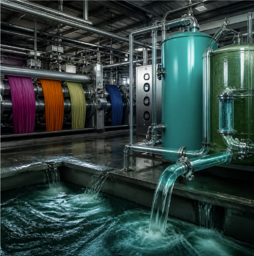

OUR SOLUTION
DyeCycle
Can textile dyeing use water without constantly wasting it?
💧 What is DyeCycle?
DyeCycle is our proposed approach to make textile dyeing more water-efficient and less polluting. Instead of treating used dyeing water as waste, the process would focus on using, treating and recovering water so that it can be reused where suitable.
1. Use Water Efficiently
Reduce unnecessary water use during dyeing and washing.
2. Control Chemical Use
Use safer chemicals and carefully measure dyes to reduce unnecessary chemical waste.
3. Treat the Wastewater
Pass used water through suitable treatment processes to remove pollutants.
4. Recover and Reuse the Water
Cleaned water can be returned to suitable stages of production instead of always using fresh water.
🔄 The DyeCycle
Fresh Water
⬇️
Dyeing & Washing
⬇️
Used Water
⬇️
Treatment
⬇️
Recovered Water
↩️ Back into Production
🌱 Based on Cleaner Production
This approach is based on real cleaner-production practices. UNEP documents textile examples where recovering and reusing wash water reduced water consumption and wastewater volume. A separate UNEP case study also describes water recovery and reuse in Tirupur's textile dyeing industry.
